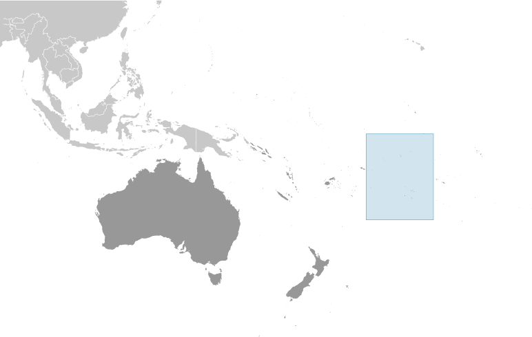
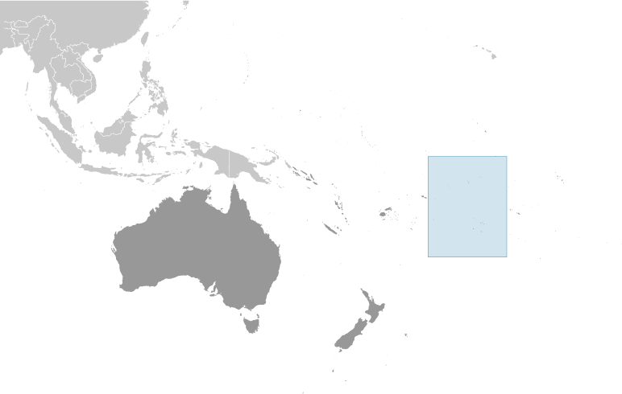

Australia - Oceania ::
Cook Islands
-
Introduction :: Cook Islands
-
Background:Named after Captain COOK, who sighted them in the 1770s, the islands became a British protectorate in 1888. By 1900, administrative control was transferred to New Zealand; in 1965, residents chose self-government in free association with New Zealand. The emigration of skilled workers to New Zealand, government deficits, and limited natural resources are of continuing concern.
-
Geography :: Cook Islands
-
Location:Oceania, group of islands in the South Pacific Ocean, about halfway between Hawaii and New ZealandGeographic coordinates:21 14 S, 159 46 WMap references:OceaniaArea:total: 236 sq kmland: 236 sq kmwater: 0 sq kmcountry comparison to the world: 215Area - comparative:1.3 times the size of Washington, DCLand boundaries:0 kmCoastline:120 kmMaritime claims:territorial sea: 12 nmexclusive economic zone: 200 nmcontinental shelf: 200 nm or to the edge of the continental marginClimate:tropical oceanic; moderated by trade winds; a dry season from April to November and a more humid season from December to MarchTerrain:low coral atolls in north; volcanic, hilly islands in southElevation:0 m lowest point: Pacific Ocean652 highest point: Te MangaNatural resources:coconuts (copra)Land use:agricultural land: 8.4% (2011 est.)arable land: 4.2% (2011 est.) / permanent crops: 4.2% (2011 est.) / permanent pasture: 0% (2011 est.)forest: 64.6% (2011 est.)other: 27% (2011 est.)Irrigated land:NAPopulation distribution:most of the population is found on the island of RarotongaNatural hazards:tropical cyclones (November to March)Environment - current issues:limited land presents solid and liquid waste disposal problems; soil destruction and deforestation; environmental degradation due to indiscriminant use of pesticides; improper disposal of pollutants; overfishing and destructive fishing practices; over dredging of lagoons and coral rubble beds; unregulated buildingEnvironment - international agreements:party to: Biodiversity, Climate Change, Climate Change-Kyoto Protocol, Desertification, Hazardous Wastes, Law of the Sea, Ozone Layer ProtectionGeography - note:the northern Cook Islands are seven low-lying, sparsely populated, coral atolls; the southern Cook Islands, where most of the population lives, consist of eight elevated, fertile, volcanic isles, including the largest, Rarotonga, at 67 sq km
-
People and Society :: Cook Islands
-
Population:9,038 (July 2017 est.) (July 2018 est.)
note: the Cook Islands' Ministry of Finance & Economic Management estimated the resident population to have been 11,700 in September 2016
country comparison to the world: 224Nationality:noun: Cook Islander(s)adjective: Cook IslanderEthnic groups:Cook Island Maori (Polynesian) 81.3%, part Cook Island Maori 6.7%, other 11.9% (2011 est.)Languages:English (official) 86.4%, Cook Islands Maori (Rarotongan) (official) 76.2%, other 8.3% (2011 est.)note: shares sum to more than 100% because some respondents gave more than one answer on the census
Religions:Protestant 62.8% (Cook Islands Christian Church 49.1%, Seventh Day Adventist 7.9%, Assemblies of God 3.7%, Apostolic Church 2.1%), Roman Catholic 17%, Mormon 4.4%, other 8%, none 5.6%, no response 2.2% (2011 est.)Age structure:0-14 years: 20.68% (male 987 /female 882)15-24 years: 15.99% (male 774 /female 671)25-54 years: 38.06% (male 1,710 /female 1,730)55-64 years: 12.72% (male 627 /female 523)65 years and over: 12.55% (male 558 /female 576) (2018 est.)population pyramid: The World Factbook Field Image ModalAustralia - Oceania :: Cook Islands Print
The World Factbook Field Image ModalAustralia - Oceania :: Cook Islands Print Image DescriptionThis is the population pyramid for Cook Islands. A population pyramid illustrates the age and sex structure of a country's population and may provide insights about political and social stability, as well as economic development. The population is distributed along the horizontal axis, with males shown on the left and females on the right. The male and female populations are broken down into 5-year age groups represented as horizontal bars along the vertical axis, with the youngest age groups at the bottom and the oldest at the top. The shape of the population pyramid gradually evolves over time based on fertility, mortality, and international migration trends.
Image DescriptionThis is the population pyramid for Cook Islands. A population pyramid illustrates the age and sex structure of a country's population and may provide insights about political and social stability, as well as economic development. The population is distributed along the horizontal axis, with males shown on the left and females on the right. The male and female populations are broken down into 5-year age groups represented as horizontal bars along the vertical axis, with the youngest age groups at the bottom and the oldest at the top. The shape of the population pyramid gradually evolves over time based on fertility, mortality, and international migration trends.
For additional information, please see the entry for Population pyramid on the Definitions and Notes page under the References tab.Median age:total: 37.2 yearsmale: 36.7 yearsfemale: 37.6 years (2018 est.)country comparison to the world: 67Population growth rate:-2.72% (2018 est.)country comparison to the world: 233Birth rate:13.7 births/1,000 population (2018 est.)country comparison to the world: 138Death rate:8.6 deaths/1,000 population (2018 est.)country comparison to the world: 75Population distribution:most of the population is found on the island of RarotongaUrbanization:urban population: 75.1% of total population (2018)rate of urbanization: 0.37% annual rate of change (2015-20 est.)Sex ratio:at birth: 1.07 male(s)/female (2017 est.)0-14 years: 1.12 male(s)/female (2017 est.)15-24 years: 1.14 male(s)/female (2017 est.)25-54 years: 1 male(s)/female (2017 est.)55-64 years: 1.17 male(s)/female (2017 est.)65 years and over: 0.97 male(s)/female (2017 est.)total population: 1.07 male(s)/female (2017 est.)Infant mortality rate:total: 12.6 deaths/1,000 live births (2018 est.)male: 15.3 deaths/1,000 live births (2018 est.)female: 9.8 deaths/1,000 live births (2018 est.)country comparison to the world: 107Life expectancy at birth:total population: 76.2 years (2018 est.)male: 73.4 years (2018 est.)female: 79.2 years (2018 est.)country comparison to the world: 91Total fertility rate:2.16 children born/woman (2018 est.)country comparison to the world: 97Health expenditures:3.4% of GDP (2014)country comparison to the world: 174Physicians density:1.19 physicians/1,000 population (2009)Drinking water source:improved: urban: 99.9% of populationrural: 99.9% of populationtotal: 99.9% of populationunimproved: urban: 0.1% of populationrural: 0.1% of populationtotal: 0.1% of population (2015 est.)Sanitation facility access:improved: urban: 97.6% of population (2015 est.)rural: 97.6% of population (2015 est.)total: 97.6% of population (2015 est.)unimproved: urban: 2.4% of population (2015 est.)rural: 2.4% of population (2015 est.)total: 2.4% of population (2015 est.)HIV/AIDS - adult prevalence rate:NAHIV/AIDS - people living with HIV/AIDS:NAHIV/AIDS - deaths:NAObesity - adult prevalence rate:55.9% (2016)country comparison to the world: 2Education expenditures:4.7% of GDP (2016)country comparison to the world: 86School life expectancy (primary to tertiary education):total: 15 years (2015)male: 15 years (2015)female: 16 years (2015) -
Government :: Cook Islands
-
Country name:conventional long form: noneconventional short form: Cook Islandsformer: Hervey Islandsetymology: named after Captain James COOK, the British explorer who visited the islands in 1773 and 1777Dependency status:self-governing in free association with New Zealand; Cook Islands is fully responsible for internal affairs; New Zealand retains responsibility for external affairs and defense in consultation with the Cook IslandsGovernment type:self-governing parliamentary democracy (Parliament of the Cook Islands) in free association with New ZealandCapital:name: Avaruageographic coordinates: 21 12 S, 159 46 Wtime difference: UTC-10 (5 hours behind Washington, DC, during Standard Time)Administrative divisions:noneIndependence:none (became self-governing in free association with New Zealand on 4 August 1965 and has the right at any time to move to full independence by unilateral action)National holiday:Constitution Day, first Monday in August (1965)Constitution:history: 4 August 1965 (Cook Islands Constitution Act 1964) (2017)amendments: proposed by Parliament; passage requires at least two-thirds majority vote by the Parliament membership in each of several readings and assent to by the chief of state’s representative; passage of amendments relating to the chief of state also requires two-thirds majority approval in a referendum; amended many times, last in 2004 (2017)Legal system:common law similar to New Zealand common lawInternational law organization participation:has not submitted an ICJ jurisdiction declaration (New Zealand normally retains responsibility for external affairs); accepts ICCt jurisdictionSuffrage:18 years of age; universalJudicial branch:highest courts: Court of Appeal (consists of the chief justice and 3 judges of the High Court); High Court (consists of the chief justice and at least 4 judges and organized into civil, criminal, and land divisions); note - appeals beyond the Cook Islands Court of Appeal are heard by the Judicial Committee of the Privy Council (in London)judge selection and term of office: High Court chief justice appointed by the Queen's Representative on the advice of the Executive Council tendered by the prime minister; other judges appointed by the Queen's Representative, on the advice of the Executive Council tendered by the chief justice, High Court chief justice, and the minister of justice; chief justice and judges appointed for 3-year renewable termssubordinate courts: justices of the peaceExecutive branch:chief of state: Queen ELIZABETH II (since 6 February 1952); represented by Tom J. MARSTERS (since 9 August 2013); New Zealand High Commissioner Peter MARSHALL (since 10 January 2017)head of government: Prime Minister Henry PUNA (since 30 November 2010)cabinet: Cabinet chosen by the prime ministerelections/appointments: the monarchy is hereditary; UK representative appointed by the monarch; New Zealand high commissioner appointed by the New Zealand Government; following legislative elections, the leader of the majority party or majority coalition usually becomes prime ministerLegislative branch:description: unicameral Parliament, formerly the Legislative Assembly (24 seats; members directly elected in single-seat constituencies by simple majority vote to serve 4-year terms); note - the House of Ariki, a 24-member parliamentary body of traditional leaders appointed by the Queen's representative serves as a consultative body to the Parliamentelections: last held on 14 June 2018 (next to be held by 2022)election results: percent of vote by party - NA; seats by party - Demo 11, CIP 10, One Cook Islands Movement 1, independent 2; composition - men 15, women 9, percent of women 37.5%Political parties and leaders:Cook Islands Party or CIP [Henry PUNA]
Democratic Party or Demo [Tina BROWNE]
One Cook Islands Movement [Teina BISHOP]International organization participation:ACP, ADB, AOSIS, FAO, ICAO, ICCt, ICRM, IFAD, IFRCS, IMO, IMSO, IOC, ITUC (NGOs), OPCW, PIF, Sparteca, SPC, UNESCO, UPU, WHO, WMODiplomatic representation in the US:none (self-governing in free association with New Zealand)Diplomatic representation from the US:none (self-governing in free association with New Zealand)Flag description:blue with the flag of the UK in the upper hoist-side quadrant and a large circle of 15 white five-pointed stars (one for every island) centered in the outer half of the flagNational symbol(s):a circle of 15, five-pointed, white stars on a blue field, Tiare maori (Gardenia taitensis) flower; national colors: green, whiteNational anthem:name: "Te Atua Mou E" (To God Almighty)lyrics/music: Tepaeru Te RITO/Thomas DAVISnote: adopted 1982; as prime minister, Sir Thomas DAVIS composed the anthem; his wife, a tribal chief, wrote the lyrics
-
Economy :: Cook Islands
-
Economy - overview:Like many other South Pacific island nations, the Cook Islands' economic development is hindered by the isolation of the country from foreign markets, the limited size of domestic markets, lack of natural resources, periodic devastation from natural disasters, and inadequate infrastructure. Agriculture, employing more than one-quarter of the working population, provides the economic base with major exports of copra and citrus fruit. Black pearls are the Cook Islands' leading export. Manufacturing activities are limited to fruit processing, clothing, and handicrafts. Trade deficits are offset by remittances from emigrants and by foreign aid overwhelmingly from New Zealand. In the 1980s and 1990s, the country became overextended, maintaining a bloated public service and accumulating a large foreign debt. Subsequent reforms, including the sale of state assets, the strengthening of economic management, the encouragement of tourism, and a debt restructuring agreement, have rekindled investment and growth. The government is targeting fisheries and seabed mining as sectors for future economic growth.GDP (purchasing power parity):$299.9 million (2016 est.)$183.2 million (2005 est.)country comparison to the world: 216GDP (official exchange rate):$299.9 million (2016 est.) (2016 est.)GDP - real growth rate:0.1% (2005 est.)country comparison to the world: 195GDP - per capita (PPP):$16,700 (2016 est.)$9,100 (2005 est.)country comparison to the world: 106GDP - composition, by sector of origin:agriculture: 5.1% (2010 est.)industry: 12.7% (2010 est.)services: 82.1% (2010 est.)Agriculture - products:copra, citrus, pineapples, tomatoes, beans, pawpaws, bananas, yams, taro, coffee; pigs, poultryIndustries:fishing, fruit processing, tourism, clothing, handicraftsIndustrial production growth rate:1% (2002)country comparison to the world: 155Labor force:6,820 (2001)country comparison to the world: 218Labor force - by occupation:agriculture: 29%industry: 15%services: 56% (1995)Unemployment rate:13.1% (2005)country comparison to the world: 167Population below poverty line:NABudget:revenues: 86.9 million (2010)expenditures: 77.9 million (2010)Taxes and other revenues:29% (of GDP) (2010 est.)country comparison to the world: 86Budget surplus (+) or deficit (-):3% (of GDP) (2010 est.)country comparison to the world: 13Fiscal year:1 April - 31 MarchInflation rate (consumer prices):2.2% (2011 est.)country comparison to the world: 114Stock of narrow money:$38.99 million (31 December 2011 est.)country comparison to the world: 191Stock of broad money:$148.2 million (31 December 2011 est.)$170.9 million (31 December 2010 est.)country comparison to the world: 190Current account balance:$26.67 million (2005)country comparison to the world: 59Exports:$3.125 million (2011 est.)$5.163 million (2010 est.)country comparison to the world: 219Exports - commodities:fish; copra, papayas, fresh and canned citrus fruit, coffee; pearls and pearl shells; clothingImports:$109.3 million (2011 est.)$90.62 million (2010 est.)country comparison to the world: 213Imports - commodities:foodstuffs, textiles, fuels, timber, capital goodsDebt - external:$141 million (1996 est.)country comparison to the world: 191Exchange rates:NZ dollars (NZD) per US dollar -1.416 (2017 est.)1.4341 (2016 est.)1.4341 (2015 est.)1.441 (2014 est.)1.4279 (2013 est.)
-
Energy :: Cook Islands
-
Electricity - production:34 million kWh (2016 est.)country comparison to the world: 209Electricity - consumption:31.62 million kWh (2016 est.)country comparison to the world: 209Electricity - exports:0 kWh (2016 est.)country comparison to the world: 123Electricity - imports:0 kWh (2016 est.)country comparison to the world: 137Electricity - installed generating capacity:14,000 kW (2016 est.)country comparison to the world: 207Electricity - from fossil fuels:79% of total installed capacity (2016 est.)country comparison to the world: 85Electricity - from nuclear fuels:0% of total installed capacity (2017 est.)country comparison to the world: 71Electricity - from hydroelectric plants:0% of total installed capacity (2017 est.)country comparison to the world: 165Electricity - from other renewable sources:21% of total installed capacity (2017 est.)country comparison to the world: 36Crude oil - production:0 bbl/day (2017 est.)country comparison to the world: 122Crude oil - exports:0 bbl/day (2015 est.)country comparison to the world: 108Crude oil - imports:0 bbl/day (2015 est.)country comparison to the world: 114Crude oil - proved reserves:0 bbl (1 January 2018 est.)country comparison to the world: 119Refined petroleum products - production:0 bbl/day (2015 est.)country comparison to the world: 133Refined petroleum products - consumption:600 bbl/day (2016 est.)country comparison to the world: 209Refined petroleum products - exports:0 bbl/day (2015 est.)country comparison to the world: 146Refined petroleum products - imports:611 bbl/day (2015 est.)country comparison to the world: 205Natural gas - production:0 cu m (2017 est.)country comparison to the world: 119Natural gas - consumption:0 cu m (2017 est.)country comparison to the world: 135Natural gas - exports:0 cu m (2017 est.)country comparison to the world: 87Natural gas - imports:0 cu m (2017 est.)country comparison to the world: 110Natural gas - proved reserves:0 cu m (1 January 2014 est.)country comparison to the world: 124Carbon dioxide emissions from consumption of energy:88,810 Mt (2017 est.)country comparison to the world: 207
-
Communications :: Cook Islands
-
Telephones - fixed lines:total subscriptions: 7,800 (July 2016 est.)subscriptions per 100 inhabitants: 75 (July 2016 est.)country comparison to the world: 199Telephones - mobile cellular:total subscriptions: 11,000 (July 2016 est.)subscriptions per 100 inhabitants: 105 (July 2016 est.)country comparison to the world: 211Telephone system:general assessment: Telecom Cook Islands offers international direct dialing, Internet, email, and fax; individual islands are connected by a combination of satellite earth stations, microwave systems, and VHF and HF radiotelephone (2017)domestic: service is provided by small exchanges connected to subscribers by open-wire, cable, and fiber-optic cable; 75 per 100 fixed-line, 105 per 100 mobile-cellular (2017)international: country code - 682; satellite earth station - 1 Intelsat (Pacific Ocean); the topography of the South Pacific region has made internet connectivity a serious issue for many of the remote islands; submarine fibre-optic networks are expensive to build and maintain, with capital costs prohibitive for the smaller island communities; some countries have to rely solely on geostationary satellites; as a result, bandwidth is limited and broadband prices are expensive (2017)Broadcast media:1 privately owned TV station broadcasts from Rarotonga providing a mix of local news and overseas-sourced programs (2016)Internet country code:.ckInternet users:total: 5,160 (July 2016 est.)percent of population: 54% (July 2016 est.)country comparison to the world: 213
-
Transportation :: Cook Islands
-
National air transport system:number of registered air carriers: 1 (2015)inventory of registered aircraft operated by air carriers: 1 (2015)Civil aircraft registration country code prefix:E5 (2016)Airports:11 (2013)country comparison to the world: 154Airports - with paved runways:total: 1 (2017)1,524 to 2,437 m: 1 (2017)Airports - with unpaved runways:total: 10 (2013)1,524 to 2,437 m: 2 (2013)914 to 1,523 m: 7 (2013)under 914 m: 1 (2013)Roadways:total: 320 km (2003)paved: 33 km (2003)unpaved: 287 km (2003)country comparison to the world: 205Merchant marine:total: 218 (2017)by type: bulk carrier 27, container ship 5, general cargo 102, oil tanker 17, other 67 (2017)country comparison to the world: 63Ports and terminals:major seaport(s): Avatiu
-
Military and Security :: Cook Islands
-
Military branches:no regular military forces; National Police DepartmentMilitary - note:defense is the responsibility of New Zealand in consultation with the Cook Islands and at its request
-
Transnational Issues :: Cook Islands
-
Disputes - international:none